The moss folk
Out in the wild places live the moss folk: knee-high bundles of stone, root and moss, with lichen beards and a faint dew-glow for eyes. They're the Moosleute of the old German forests, who asked woodcutters for bread, and the landvættir of the north, who keep a place and live in its cairns. Build them a cairn and a family moves in. Leave them bread and they tend the wild for you. Look straight at one, though, and all you'll see is a mossy stone.
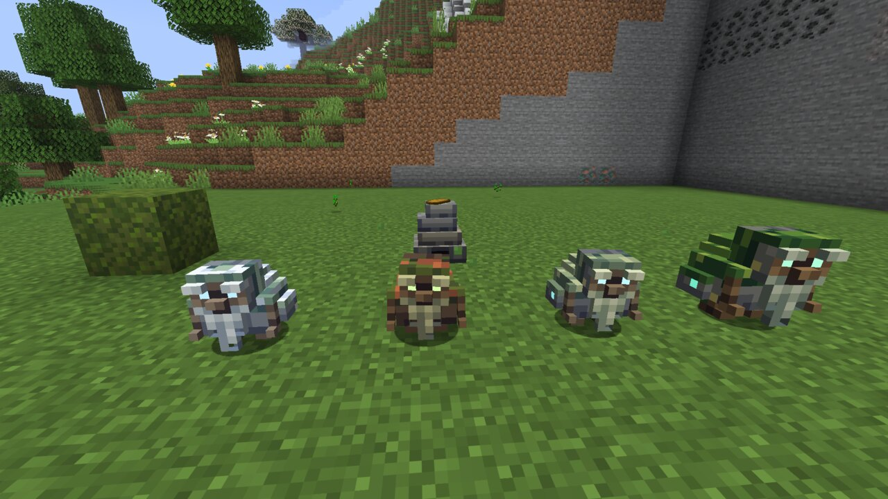
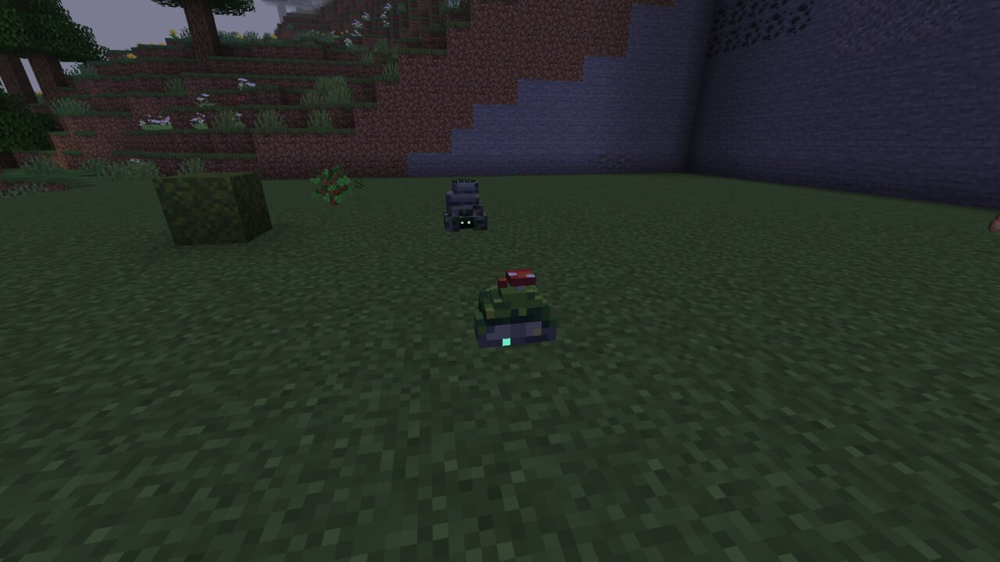
Building a cairn
Craft a Cairn from two cobblestone and a mossy cobblestone (any arrangement) and set it down: it's one flat stone. Use a stone on it to add another, up to five. Cobblestone, mossy cobblestone, stone, cobbled deepslate, tuff, andesite, diorite, granite and blackstone all count. Each cairn has a small dark hollow at its foot, on the side that faced you when you placed it: that's the family's door.
Use a cairn with an empty hand to read it: how many stones it has, whether anyone lives there, what's on the capstone, and if not, why nobody's moved in yet.
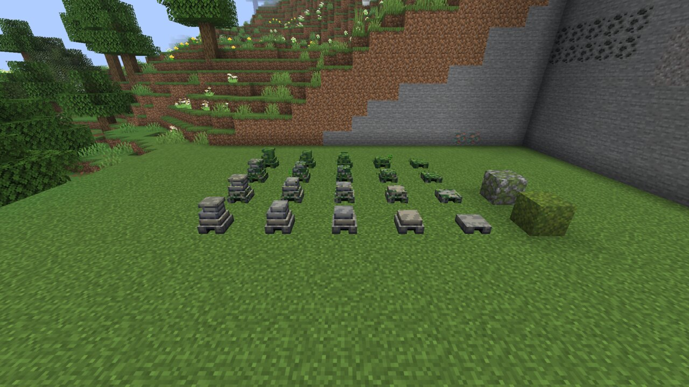
Who'll move in
The moss folk are particular. A cairn draws a family when:
- it's at least three stones high;
- there's open sky over it;
- it stands on the earth itself: grass, dirt, podzol, moss, mud, stone, gravel, snow or peat (not on your floorboards);
- it's in country they live in: anywhere in the Overworld but oceans, beaches, rivers, deserts, badlands and mushroom fields;
- it's away from houses: no more than five planks, doors, bricks, stone bricks, glass, wool or beds within four blocks.
Once a cairn will do, a family of one to three moves in, usually within a minute or so: you'll hear a small, contented hum among the stones. Sometimes one of them is an elder, a quarter bigger than the rest. Their kind comes from the country round the cairn:
| Kind | Where | Look |
|---|---|---|
| Forest | woods, plains, meadows: most places | deep green moss |
| Taiga | taiga that isn't snowy | grey-green lichen and old-man's-beard, paler |
| Swamp | swamps and mangrove swamps | peat brown with red-green bog moss |
| Snowy | anywhere cold enough to snow | frost-rimed, pale, snow on the shoulders |
Some of them wear a little cluster of mushrooms or a fern frond on their heads. Each day they live there, moss creeps over the cairn a little further, from bare stone to a thick moss cushion with lichen and a fern (three stages, one a day).
At night
The moss folk keep to the night, by the clock: from dusk to first light (about 18:30 to 05:30 on a clock), whatever the weather. When someone is about, they come out of the hollow one at a time and potter round their cairn, no more than ten blocks or so from it: they hum to themselves, pick up pebbles, seeds and feathers, and wander about with them cupped in their hands. While someone's at home, two small eyes glow in the hollow.
At first light they go home. You won't catch one out in the day: any still about are back in the cairn within a few seconds, unseen.
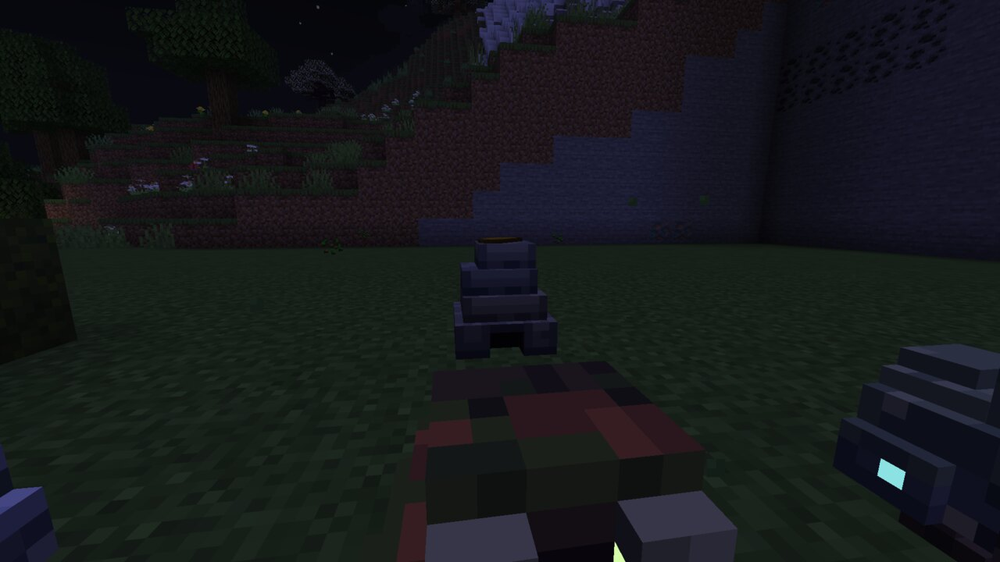
Don't look
Look straight at one (within about 24 blocks, with nothing in the way) and it curls up in half a second into a mossy stone: head, arms and beard tucked away, its eyes hidden. Look away for a moment and it uncurls and carries on. A toadstool or a fern sitting on a stone is the only giveaway. By day, a curled one stays a stone until you look away, and then it's gone.
They don't hide from anyone in a moss cloak, and they don't curl up while they're listening to a skald's saga.
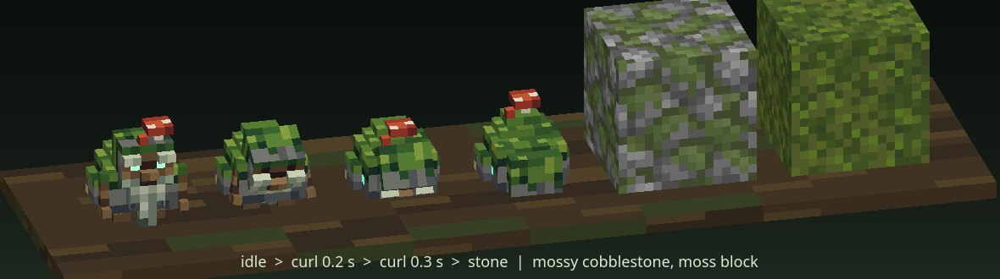
Bread is the knock
Lay bread on the capstone
Use a loaf of bread on the cairn. It sits on the top stone. One loaf at a time.
Wait for night
Sometime in the night, one of the family comes to the door and eats it, nibbling.
The wild is tended
For three days after, every growing thing within eight blocks of the cairn grows about twice as fast or more: saplings, sweet berry bushes, the wild berry bushes, mushrooms, cave vines and glow lichen. Cobblestone and stone bricks near it slowly go mossy.
Gifts
About one loaf in three, they leave something on the capstone at first light: a ball or two of glow lichen, moss, a feather, flint, sweet berries, mushrooms. Take it with an empty hand.
Each loaf they eat from your hand earns a little of their trust, which is kept with you (not with the cairn). If you've wronged them (below), they leave your bread where it is.
Glow Lichen Ball Glow lichen balls: use one on a block's face and glow lichen takes and grows there.The moss cloak
The seventh loaf they eat from your hand, they've been weaving something: at first light there's a Moss Cloak on the capstone, a cloak of living moss, lichen and tiny ferns. Wear it (in the chest slot) and:
- the moss folk don't hide from you;
- the beasts of the wild know you as kin, as with the Hearth-Keeper's antler crown: deer and chipmunks don't flee, boars don't charge.
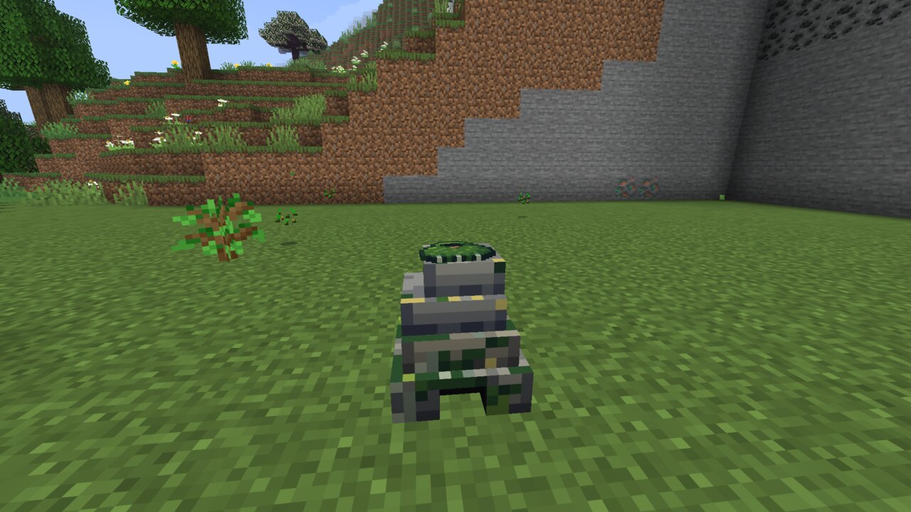
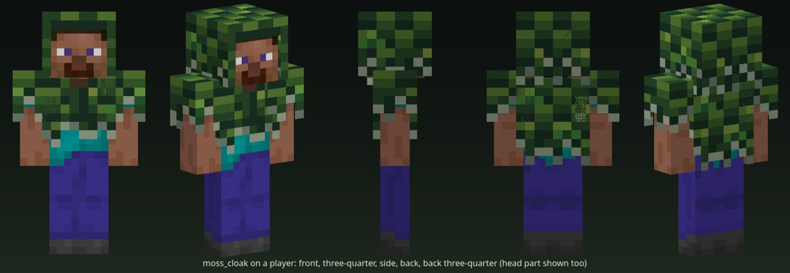
Storm nights
On a night with thunder, something rides in the storm. Listen and you'll hear it, far off in the wind: horns, and hounds. The moss folk know what that is. They run for the nearest hearth cairn (any cairn within six blocks of a lit campfire, long hearth or fire, up to forty blocks away) and huddle there till it passes, still as stones.
In the morning they remember who kept that fire: whoever built the hearth cairn gains their trust (as much as two loaves) and finds a gift on its capstone. If there's no hearth cairn near, they hide in their own and wait it out. The skald's Saga of the Hunt in the Storm tells you why.
If you wrong them
| What you did | What happens |
|---|---|
| Broke a cairn a family lived in | They scatter into the trees and don't come back. A grudge for three days, and moss creeps over your tools (Mining Fatigue for as long). |
| Struck one of them | It's gone in a puff. A grudge for two days, and the fatigue. |
| Felled a living tree within six blocks of a lived-in cairn | A grudge for a day, and the fatigue. (Logs from a tree you planted yourself, with no wild leaves on it, don't count.) |
Each grudge also costs you some of their trust. While they hold one, they won't take your bread and the Grandmother scolds you. In creative mode they don't hold it against you.
The Moss Grandmother
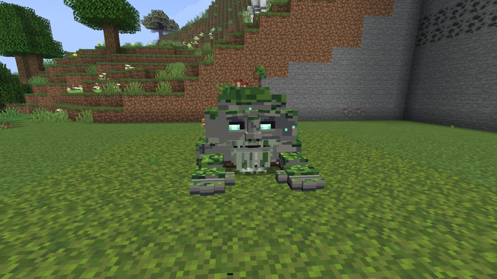
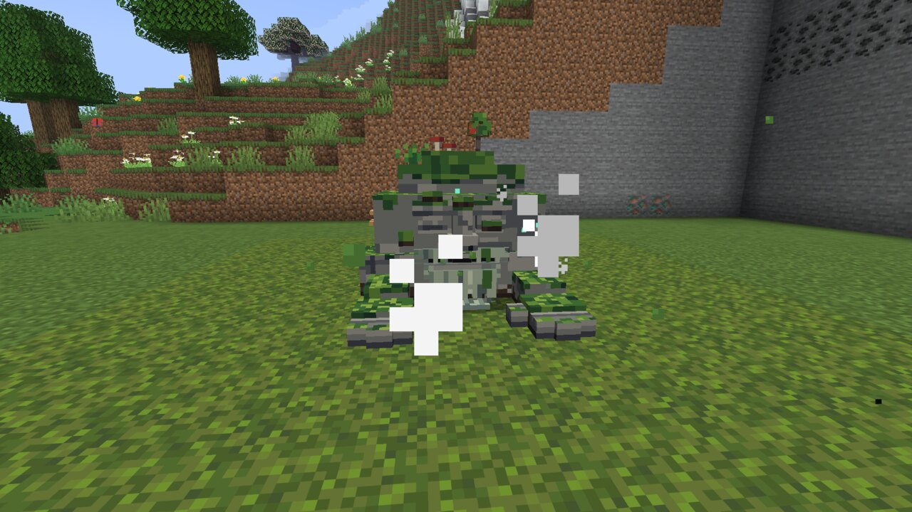
When the ice went north it left a stone in the wood, and the moss came to her first. She's the eldest of the moss folk: a great mossy boulder half sunk in the forest floor, ferns in her lap, a sapling on her shoulders, two great stone hands resting on the moss in front of her. She sleeps in a glade: a ring of five or six old, deep-mossed cairns (most of them lived in) round a clearing carpeted in moss, ferns and mushrooms, with mossy boulders and glow lichen.
Glades are rare, and only in the oldest woods: old growth pine and spruce taiga, old growth birch forest, dark forest
and the pale garden. The skald's Saga of the Moss Grandmother tells you which way the nearest one lies; on a
server, operators can find one with /locate structure livingworld:moss_glade.
Wake her
Use her. The ground rumbles, moss and soil fall from her face, her brows lift and her eyes open.
Talk to her
Use her again and she speaks: the first time of who she is, then of the folk and the old country.
Her gift
If her children have come to trust you (three loaves or more), once, she lifts one great hand and gives you something: a moss cloak, if you haven't one yet, or glow lichen.
Let her sleep
Leave her alone for half a minute and she settles back to sleep.
Secret what the Grandmother says
- “I was a stone when the ice went north. The moss came, and the little ones with it, and we have kept this wood since.”
- “The folk at the cottages forget us. That's well. But some of them still leave bread on the sill, and don't know why.”
- “When the storms come in winter, something rides in them. Horns and hounds. The little ones run for the nearest fire. Keep one lit.”
- “Every cairn is a door, and every door wants a keeper.”
- “A tree that falls in its own time feeds the moss for a hundred years. A tree felled before its time is a debt.”
- “Under the turf of the old woods there are halls with cold hearths. The ones who kept them are in the smoke now.”
- “The skalds come to the fires in winter. Some of them tell our story too. Badly.”
- “Sleep is long for a stone. Go on. I'll still be here.”
The moss folk and the skald
When a skald tells a saga at a fire, the moss folk nearby come out of their cairns and sit at the edge of the firelight to listen, faces up. They don't curl up while they listen, even if you look straight at them.
Advancements
In the Old Ways tab:
- A Door for the Little Folk: Stack a cairn three stones high out in the wild
- Someone's Home: A family of moss folk moves into a cairn near you
- Bread Is the Knock: The moss folk eat bread you left on a capstone
- Storm-Keeper: Shelter the moss folk by your fire through a storm night
- Moss-Kin: Be given a cloak woven from living moss
- Stone-Waker: Wake the Moss Grandmother in her glade
Close up
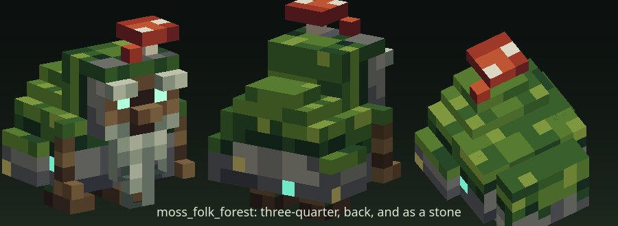
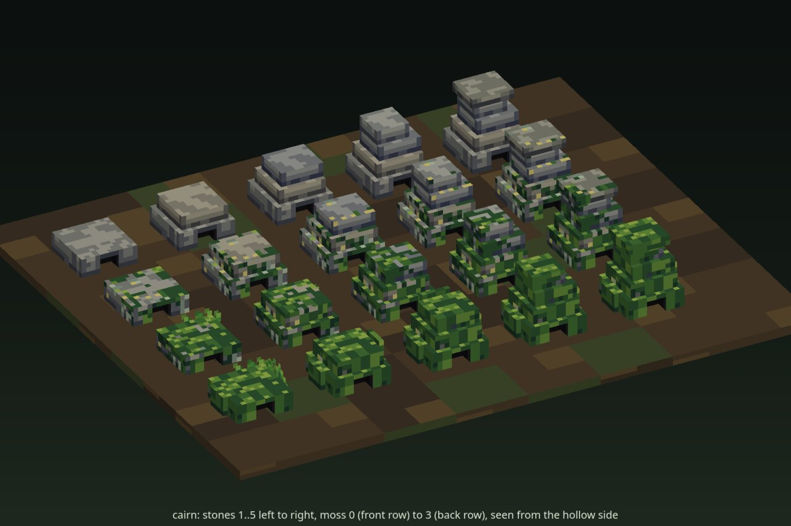
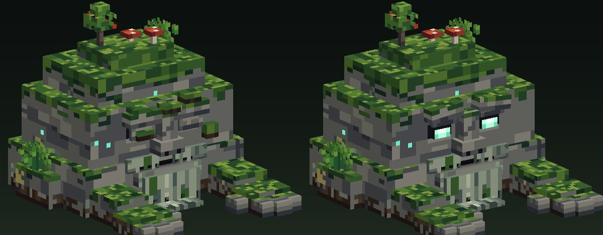